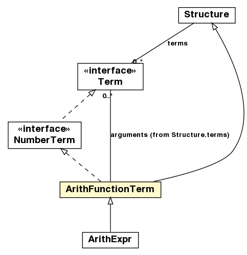

jason.asSyntax
Class ArithFunctionTerm

java.lang.Object
 jason.asSyntax.DefaultTerm
jason.asSyntax.Literal
jason.asSyntax.Atom
jason.asSyntax.Structure
jason.asSyntax.ArithFunctionTerm
jason.asSyntax.DefaultTerm
jason.asSyntax.Literal
jason.asSyntax.Atom
jason.asSyntax.Structure
jason.asSyntax.ArithFunctionTerm
- All Implemented Interfaces:
- LogicalFormula, NumberTerm, Term, ToDOM, java.io.Serializable, java.lang.Cloneable, java.lang.Comparable<Term>
- Direct Known Subclasses:
- ArithExpr
public class ArithFunctionTerm
- extends Structure
- implements NumberTerm
Represents an arithmetic function, like math.max(arg1,arg2) -- a functor (math.max) and two arguments.
A Structure is thus used to store the data.
- See Also:
- Serialized Form
| Methods inherited from class jason.asSyntax.Structure |
addTerm, addTerms, addTerms, countVars, delTerm, getArity, getSingletonVars, getTerm, getTerms, getTermsSize, hasTerm, hasVar, makeTermsAnnon, makeVarsAnnon, parse, setTerm, setTerms, varToReplace |
| Methods inherited from class jason.asSyntax.Literal |
addAnnot, addAnnots, addAnnots, addSource, canBeAddedInBB, clearAnnots, copy, delAnnot, delAnnots, delSource, delSources, equalsAsStructure, forceFullLiteralImpl, getAnnots, getAnnots, getAsListOfTerms, getPredicateIndicator, getSources, getTermsArray, hasAnnot, hasAnnot, hasSource, hasSource, hasSubsetAnnot, hasSubsetAnnot, importAnnots, negated, newFromListOfTerms, parseLiteral, setAnnots, setNegated |
| Methods inherited from class jason.asSyntax.DefaultTerm |
getSrcInfo, hashCode, isInternalAction, isList, isPlanBody, isPred, isRule, isString, isUnnamedVar, isVar, resetHashCodeCache, setSrcInfo |
| Methods inherited from class java.lang.Object |
finalize, getClass, notify, notifyAll, wait, wait, wait |
| Methods inherited from interface jason.asSyntax.Term |
countVars, getSrcInfo, hasVar, isInternalAction, isList, isPlanBody, isPred, isRule, isString, isUnnamedVar, isVar, setSrcInfo |
ArithFunctionTerm
public ArithFunctionTerm(java.lang.String functor,
int termsSize)
ArithFunctionTerm
public ArithFunctionTerm(ArithFunction function)
ArithFunctionTerm
public ArithFunctionTerm(ArithFunctionTerm af)
getValue
public NumberTerm getValue()
isNumeric
public boolean isNumeric()
- Specified by:
isNumeric in interface Term- Overrides:
isNumeric in class DefaultTerm
isAtom
public boolean isAtom()
- Specified by:
isAtom in interface Term- Overrides:
isAtom in class Structure
isStructure
public boolean isStructure()
- Specified by:
isStructure in interface Term- Overrides:
isStructure in class Structure
makeVarsAnnon
public Literal makeVarsAnnon(Unifier un)
- Description copied from class:
Literal
- replaces all variables of the term for unnamed variables (_).
- Overrides:
makeVarsAnnon in class Structure
- Parameters:
un - is the unifier that contains the map of replacements
isLiteral
public boolean isLiteral()
- Specified by:
isLiteral in interface Term- Overrides:
isLiteral in class Literal
isArithExpr
public boolean isArithExpr()
- Specified by:
isArithExpr in interface Term- Overrides:
isArithExpr in class DefaultTerm
isEvaluated
public boolean isEvaluated()
- returns true if the function/expression was already evaluated
isGround
public boolean isGround()
- Specified by:
isGround in interface Term- Overrides:
isGround in class Structure
isUnary
public boolean isUnary()
apply
public boolean apply(Unifier u)
- Does a "normal" apply and then solve the expression and store the result,
so future calls of solve do not need to compute the value again
- Specified by:
apply in interface Term- Overrides:
apply in class Structure
setAgent
public void setAgent(Agent ag)
getAgent
public Agent getAgent()
solve
public double solve()
- computes the value for this arithmetic function (as defined in the NumberTerm interface)
- Specified by:
solve in interface NumberTerm
checkArity
public boolean checkArity(int a)
logicalConsequence
public java.util.Iterator<Unifier> logicalConsequence(Agent ag,
Unifier un)
- Description copied from class:
Literal
- logicalConsequence checks whether one particular predicate
is a logical consequence of the belief base.
Returns an iterator for all unifiers that are logCons.
- Specified by:
logicalConsequence in interface LogicalFormula- Overrides:
logicalConsequence in class Literal
equals
public boolean equals(java.lang.Object t)
- Specified by:
equals in interface Term- Overrides:
equals in class Structure
compareTo
public int compareTo(Term o)
- Specified by:
compareTo in interface java.lang.Comparable<Term>- Overrides:
compareTo in class Structure
calcHashCode
protected int calcHashCode()
- Overrides:
calcHashCode in class Structure
toString
public java.lang.String toString()
- Overrides:
toString in class Structure
getErrorMsg
public java.lang.String getErrorMsg()
- Overrides:
getErrorMsg in class DefaultTerm
clone
public NumberTerm clone()
- Description copied from class:
Structure
- make a deep copy of the terms
- Specified by:
clone in interface Term- Overrides:
clone in class Structure
getAsDOM
public org.w3c.dom.Element getAsDOM(org.w3c.dom.Document document)
- Description copied from class:
Structure
- get as XML
- Specified by:
getAsDOM in interface ToDOM- Overrides:
getAsDOM in class Structure